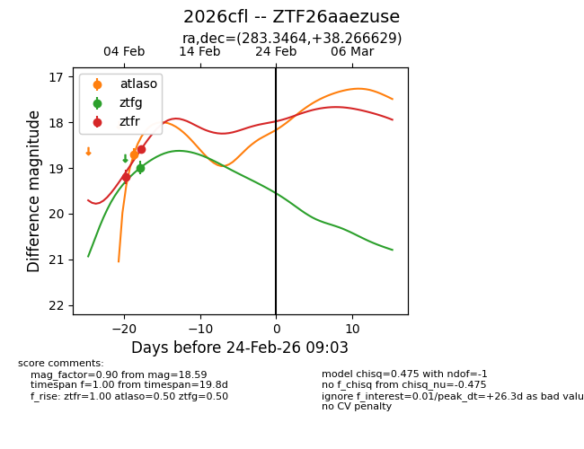
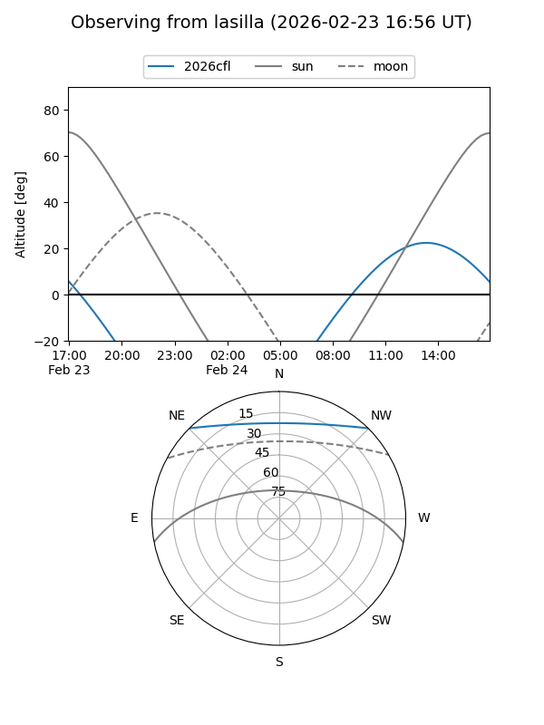
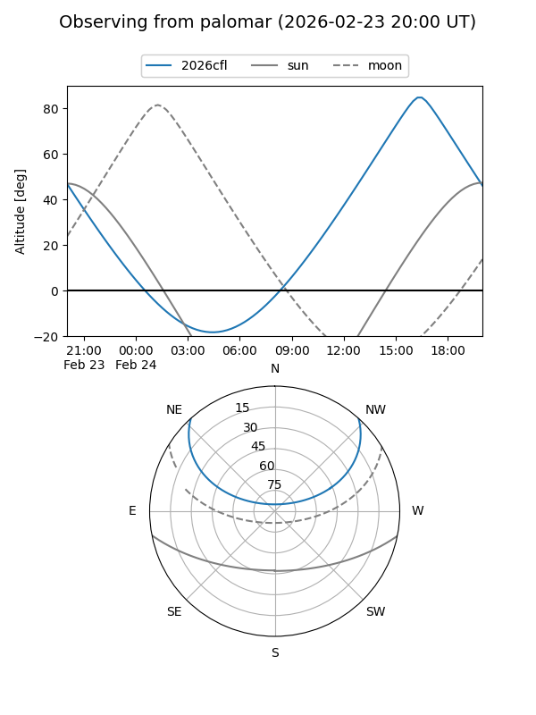
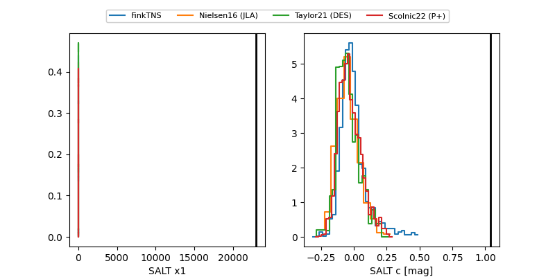

2026cfl
Target 2026cfl at 2026-02-24 09:08
Aliases and brokers:
FINK: link
Lasair: link
ALeRCE: link
TNS: link
YSE: link
alt names
ZTF26aaezuse (ztf,fink_ztf)
2026cfl (tns,yse)
Coordinates:
equatorial (ra, dec) = 283.3464,+38.26663
equatorial (HMS+DMS) = 18:53:23.13,+38:15:59.86
galactic (l, b) = (68.1513,+16.04920)
Flags:
Photometry:
last atlaso=18.70, ztfg=18.99, ztfr=18.59
1 atlaso, 1 ztfg, 2 ztfr detections
Lightcurve

Visibility


Additional plots
